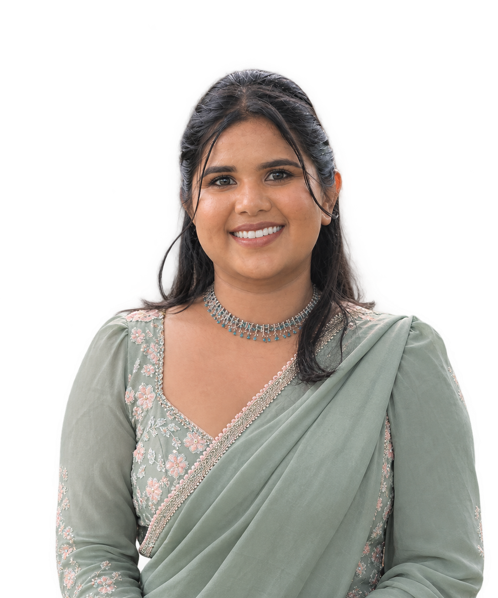

Hello, I’m
Chamudi De Silva
I study how people understand language, and how far language models capture what we mean beyond what we say. I want to build AI that is more human, and more human-centred.

Explore my mind
Seven regions, seven parts of my work. Drag to turn the brain, then click a glowing region to open it. The left hemisphere holds the research, the right holds what I love beyond research.
Drag to rotate · click a region or its label
My Ikigai
I want to understand how a mind makes meaning: how we hear a sentence and know what was meant, and how far a model can come to do the same. I come to that question with calm and curiosity, and I try to look at people, and at hard problems, with a quiet optimism. What I hope to build is AI that understands us a little more the way a thoughtful person does.